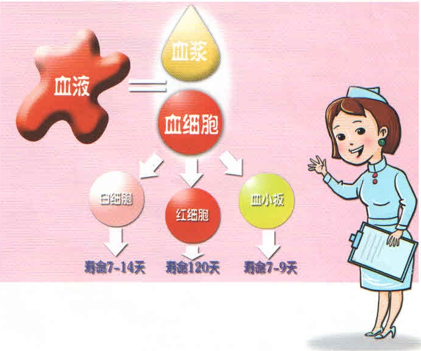
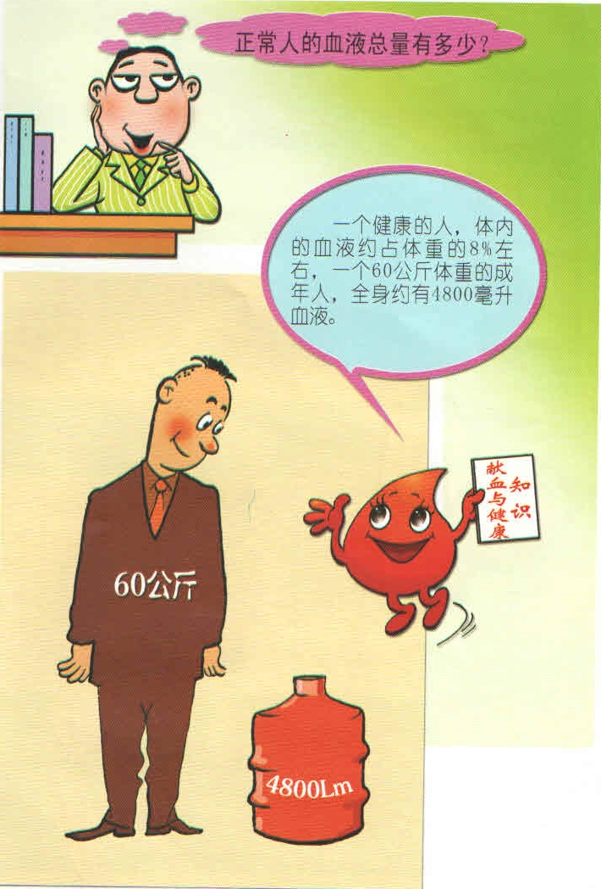
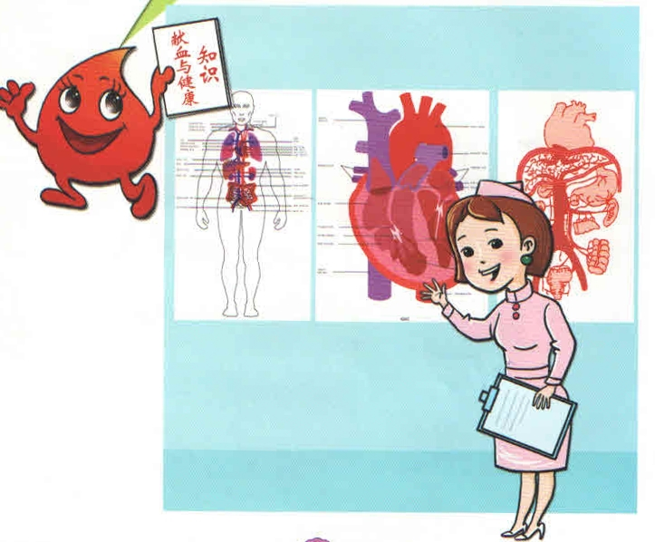
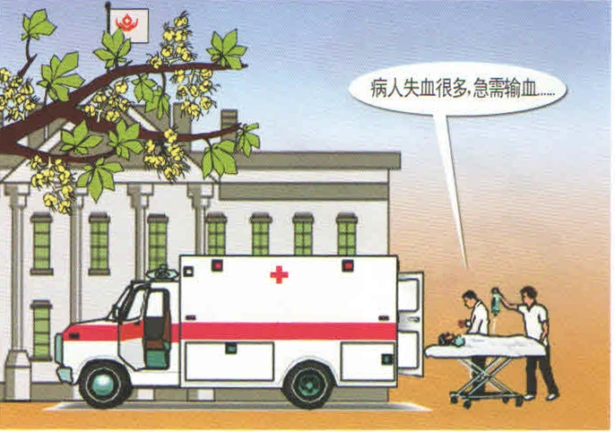
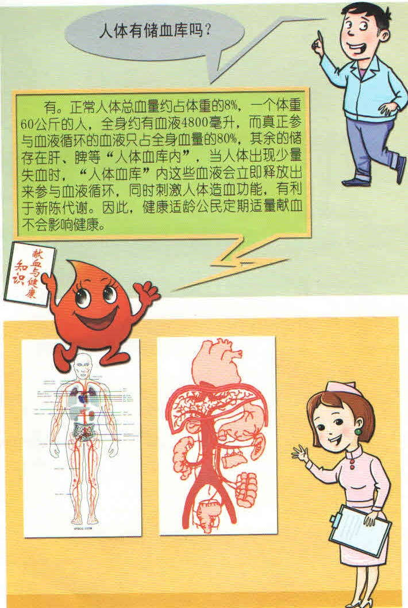

血液小知识
1）血液是由哪些成分组成的？
血液是由55~60%的血浆和40~45%的血细胞（红细胞、白细胞、血小板）组成的。血细胞主要是红细胞，它的机能是运送氧气到身体各部，并将代谢产生的二氧化碳送到肺部随呼气而排出体外；其次是白细胞，它能帮助人体抵御细菌、病毒和其他异物的侵袭，是保护人体健康的卫士；再者为血小板，当人体出血时，它可以发挥凝血和止血的作用。血浆中的90%是水，其余为蛋白质、钠、钾、激素、酶等人体新陈代谢所需要的物质，维持人体正常生命活动。
血液中的红细胞生命期约120天，白细胞约9~13天，血小板约8~10天，即使不献血，人体内的血细胞每时每刻也会衰老死亡。献血200毫升，仅占全身血量的5%，而且献血后能刺激人体造血功能，使之旺盛地造血，故适量献血是不会影响身体健康的。
2）血液有哪些生理功能？
血液的功能包含血细胞功能和血浆功能两部分，有运输、调节人体温度、防御、调节人体渗透压和酸碱平衡四个功能。
红细胞主要功能是运进氧气运出二氧化碳。白细胞的主要功能是杀灭细菌，抵御炎症，参与体内免疫发生过程。血小板主要是在体内发挥止血功能。血浆的功能主要是营养、运输脂类、缓冲、形成渗透压，参与免疫、参与凝血和抗凝血功能。
由于血液具有上述重要的生理机能，一旦血液的总量过分减少，或其组成成分发生异常变化，都可引起严重的后果。呵呵……血液的功能太重要了……没有血液人就不能够生存的……

3)正常人的血液总量有多少？
我国正常成人的血液总量，男子约占体重的8%，女子约占体重的7.5%左右。例如一个体重60公斤的男女，血量为4500～4800毫升左右。人体的血液总量不但在性别之间有差异，即使同一个人，在不同情况下也会有一定的改变。身体健壮的人比瘦弱的略多，运动员的血量较一般人多，妊娠期妇女血量增加较多。不过，在正常情况下，人的血量是相对恒定的，一般的增减不超过10%。
血液在人体内的分布可以分为两大部分。血液总量中的绝大部分是在心、血管中循环流动，叫做循环血量。还有一部分血液滞留在肝脏、脾脏的毛细血管、小静脉和血窦内，起着贮存血液的作用。例如在大量饮水或静脉输液时，虽然血量在开始时有所增加，但由于多余的液体很快通过肾脏排出体外，血液总量也就很快恢复正常，与此相反，当人体在激烈运动、情绪激动或大量失血时，贮血库中的血液就释放出来以补充循环的血量。
4)血液的颜色是什么样的？
血液的颜色是有差别的，血液的红色是来自红细胞内的血红蛋白，血红蛋白含氧量多时呈鲜红色（动脉血），含氧量少的呈暗红色（静脉血）。通常献血抽的是静脉血，所以外观看上去呈暗红色。若血液中含量较多的是高铁血红蛋白或其他血红蛋白衍生物，则呈紫黑色。血浆（或血清）因含少量胆红素，看上去呈透明淡黄色；若含乳糜微粒，则呈乳白浑浊；若发生溶血，则血浆呈红色。
5)人体的血液是如何循环的？
人类血液循环是封闭式的，是由体循环和肺循环两条途径构成的双循环。血液由左心室射出经主动脉及其各级分支流到全身的毛细血管，在此与组织液进行物质交换，供给组织细胞氧和营养物质，运走二氧化碳和代谢产物，动脉血变为静脉血；再经各级静脉汇合成上、下腔静脉流回右心房，这一循环为体循环。血液由右心室射出经肺动脉流到肺毛细血管，在此与肺泡气进行气体交换，吸收氧并排出二氧化碳，静脉血变为动脉血；然后经肺静脉流回左心房，这一循环为肺循环。
6）人失血多少会有生命危险？
血液的总量约占体重的7%～8%．如果一个正常成人体重60千克，其血液量约为4500～4800毫升．一个成年人失血量少于400毫升时，1次失血量不超过血液总量的10%，可以没有明显的症状，不用输血；当失血量在800-1000毫升时即20%，会出现面色、口唇苍白，皮肤出冷汗，手脚冰冷、无力，呼吸急促，脉搏快而微弱等症状，可以输血；当失血量超过1200毫升时即30%，生命就会发生危险；当失血量达到1500毫升以上即35%左右时，可引起大脑供血不足，伤者会出现视物模糊、口渴、头晕、神志不清或焦躁不安，甚至昏迷等症状，必须立即输血．
7）人体有储血库吗？
有啊。一个人血液总量大约是体重的8%，如60公斤的人大约有4800ML血液，人体血液80%在血管中流动，维持生命。20%储存在肝、脾等脏器内，是人体“小血库”。当人体出现少量失血时，人体“小血库”内这些血液就会立即释放出来参与血液循环，同时刺激人体造血功能，有利于新陈代谢。因此，健康适龄公民定期适量献血不会影响健康。
8）血液是怎样生成的？
血液的生成很有趣，就像田径场上的接力跑，参与者有胚胎的卵黄囊、肝、脾、肾、淋巴结、骨髓等。造血始于人胚的第3周，此阶段还没有什么器官形成，一个叫卵黄囊的胚胎组织担起造血的第一责任。人胚第6周，人体器官形成，肝脏接着造血。人胚第3个月，脾是主要的造血器官。人胚第4个月后，骨髓开始造血，这是人体最重要的造血组织。出生后，肝、脾造血停止，骨髓负起造血的全部责任。
成年人的红细胞、血小板和大部分白细胞是由红骨髓的原始血细胞分化出来的，小部分白细胞是由淋巴细胞生成的。
红细胞的寿命平均120天，在特殊情况下，如失血、缺氧等，能刺激肾脏产生一种化学物质叫促红细胞生成酶，它能催化血浆中没有活性的促红细胞生成素原变成有活性的促红细胞生成素，随血液循环到达红骨髓，刺激红骨髓加速制造红细胞。此外，人体产生的雄性激素也有刺激肾脏释放促红细胞生成素和刺激骨髓造血的生理作用，骨髓是人体的造血工厂。